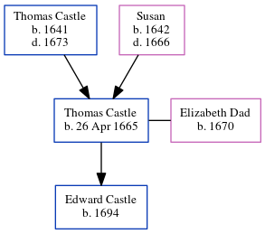

Thomas Castle 1665 - c1704
[ Home ] | [ Calendar ] | [ Surnames Index ] | [ Errors ] | [ Family History ]The child of Thomas Castle and Susan, Thomas Castle, the 7 times great-grandfather of Nigel Horne, was born in Capel-Le-Ferne, Kent, England on 26 Apr 16651, was baptised on 30 Sept 1665 and was orphaned at the age of 8 following the death of his mother in 1666 and father in 1673.
He married Elizabeth Dad (with whom he had 1 child, Edward) in Capel-Le-Ferne on 19 May 16912 (Capel Le Ferne, Kent, England).Thomas was buriedon 15 Nov 1704 in Blean, Kent, England on 15 Nov 1704.
Parents
- Thomas was born in 1641
- Susan was born in 1642
Children
- Edward was born in 1694
Citations
- Public Member Trees Online publication - Provo, UT, USA: The Generations Network, Inc., 2006.Original data - Family trees submitted by Ancestry members.Original data: Family trees submitted by Ancestry members.
- England Marriages 1538-1973 - Findmypast
Media
Canterbury Burials Transcription - GBPRS-CANT-D-95207967
England Marriages 1538-1973 - R_847796022
Family Tree
Map
Generated by ged2site. Last updated on Jul 3, 2024
Known Issues
Burial date (15 Nov 1704) has no citations